Chicago transit ridership
Lecture 15 Géron Ch. 13
Applications of Machine Learning
BSc Mathematics of Artificial Intelligence · Third year
Everything so far assumed the rows were exchangeable: a random split was valid because any row was as good as any other for training.
So the split changes, the baselines change, and the first thing to derive is what makes a series predictable at all.
Part one
8 minutes
You are a data scientist at the transit authority of a large city.
One number per mode, per day, one day ahead.
What decision does this number change?
Those decisions are made the evening before. That fixes the horizon at one day, and it fixes when the forecast has to exist: before the day it describes.
Forecast too high
Empty vehicles run. The cost is fuel, crew hours and a line in the budget. It is measurable and it is survivable.
Forecast too low
Passengers are left on platforms at peak. The cost is political, and it does not appear in any table you will be shown.
We are about to choose a symmetric metric anyway, and we should say so out loud rather than discover it later.
| Question | Answer | Because |
|---|---|---|
| Supervision | supervised | the day arrives, and then we know |
| Task | regression | a count, not a category |
| Learning mode | batch, offline | one row per day; the whole record fits in memory |
The rows are not exchangeable.
Hold on to that. It has consequences we will not reach today.
Part one, continued
7 minutes
from pathlib import Path
import tarfile, urllib.request
import pandas as pd
def load_ridership():
tarball = Path("datasets/ridership.tgz")
if not tarball.is_file():
Path("datasets").mkdir(parents=True, exist_ok=True)
url = "https://github.com/ageron/data/raw/main/ridership.tgz"
urllib.request.urlretrieve(url, tarball)
with tarfile.open(tarball) as t:
t.extractall(path="datasets", filter="data")
return pd.read_csv(
"datasets/ridership/CTA_-_Ridership_-_Daily_Boarding_Totals.csv",
parse_dates=["service_date"])
Same shape as the loader in the first application. The data will change; you will be on another machine; write the function.
df = load_ridership()
df.columns = ["date", "day_type", "bus", "rail", "total"]
df = df.sort_values("date").set_index("date")
df = df.drop("total", axis=1) # it is just bus + rail
df = df.drop_duplicates() # and this one removes 62 rows
The file ships with 7,701 rows and 7,639 distinct ones. Sixty-two days appear twice, identically. Nothing warns you.
Reviewer question 4, from the first application: what was dropped — rows, columns, NaNs? Count them. Here the answer is 62, and you only know because you counted.
>>> df.head(3)
day_type bus rail
date
2001-01-01 U 297192 126455
2001-01-02 W 780827 501952
2001-01-03 W 824923 536432
On the first day of 2001, 297,192 people
boarded a bus and 126,455 boarded a train. It was a public
holiday, which is why both numbers are low — and which the
day_type column is telling us.
day_type | Meaning | Days |
|---|---|---|
W | an ordinary working day | 5,336 |
U | the second weekend day, and public holidays | 1,216 |
A | the first weekend day | 1,087 |
This column is unusual and worth pausing on: we know it in advance. The next day's type is on the calendar today, so it is a legitimate input to a forecast of that day. Most features are not like that.
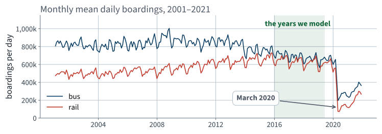
Three things are visible at this scale and none of them is the thing we will model.
A model fitted across that cliff is being asked to describe two different cities. We will come back to it, but not by pretending it is noise.
Everything after that date is set aside. Not because it is uninteresting — it is the most interesting part of the record — but because we cannot both use it and claim to have been surprised by it.
Data snooping, from the first application, applies to time as well as to rows.
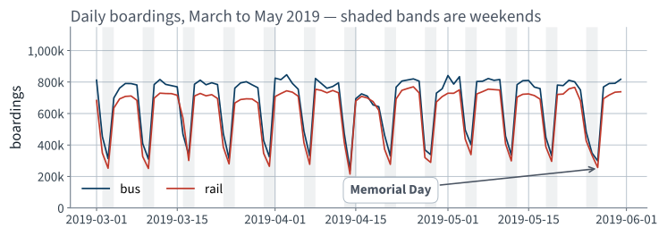
A seven-day cycle so strong that it dominates everything else on the plot.
This immediately suggests a forecast that requires no model at all. Hold that thought for ten minutes.
At the end of May there is a deep trough in the middle of a working week. Ask the data rather than the calendar:
>>> list(df.loc["2019-05-25":"2019-05-27"]["day_type"])
['A', 'U', 'U']
Three consecutive non-working days: a public holiday extending the weekend. The column we were given already knows.
Every anomaly you find should end either in an explanation or in a note that you could not find one. Not in silence.
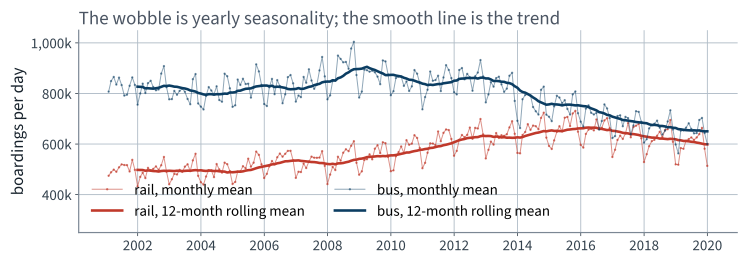
The thin line wobbles once a year; the thick line is where the level is actually going.
Seasonality
A pattern that repeats with a fixed period. Here: seven days, strongly; twelve months, weakly.
Trend
A slow movement of the level itself, with no period. Here: rail rising to about 2015, then falling.
A moving average of the right width removes the seasonality and leaves the trend. That is the whole content of the thick line.
In the next lecture we take both of them out arithmetically, and that turns out to explain something about today.
The mathematics
20 minutes · examinable
Every model you have fitted in this course assumes that the data it was trained on and the data it will meet are the same kind of thing.
For a time series, what exactly does that assumption say — and does our series satisfy it?
A series $\{y_t\}$ is strictly stationary if, for every $k$, every choice of times $t_1 < \dots < t_k$ and every shift $h$,
The whole joint law is invariant under a shift in time. Nothing about the process distinguishes one epoch from another.
This is far more than we need, and far more than any real series has.
$\{y_t\}$ is weakly (or second-order) stationary if three things hold:
Only the first two moments, and only the requirement that the covariance forgets when and remembers only how far apart.
Fitting minimises an average loss over the training rows and we then quote that as an estimate of the loss on future rows. That step is a claim: the future rows come from the same distribution.
And it is not a technicality you can ignore: it is the difference between an error that averages out and one that accumulates.
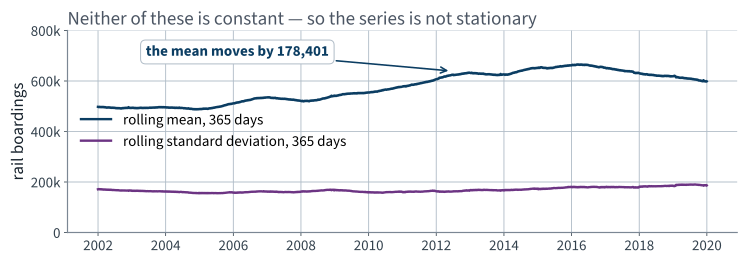
The rolling mean moves by more than 170,000 riders across the record. The first condition fails outright.
The augmented Dickey–Fuller test on the 2016–2019 window returns a statistic of $-4.61$ with $p \approx 0.0001$, so it rejects its null hypothesis.
A test answers the question it was given. Ours was not that question.
The test itself is outside the book and not examinable. The habit of asking what a $p$-value is a $p$-value for is very much examinable.
Define the difference operator
and its iterates $\nabla^d$. Applied to a sampled function, $\nabla$ is a discrete derivative: it returns the slope of the series at each step.
One value is lost at the start each time you apply it.
Count those losses; the book's diff returns
NaN there and says nothing.
Take the series $3, 5, 7, 9, 11$ — exactly linear in $t$:
A linear trend becomes a constant. The constant is the slope.
And a constant mean is the first condition of weak stationarity, which we have just bought.
The squares become a linear series, which becomes a constant.
Leading coefficient $d \neq 0$, so the degree drops by exactly one. Induct.
The number $d$ of differencing rounds is the order of integration — the I in ARIMA. An ARIMA model differences $d$ times, fits an ARMA model to the result, and adds back what it subtracted when it forecasts.
Autoregressive part: a weighted sum of past values — which is precisely the linear model of the previous lecture. Moving-average part: a weighted sum of past forecast errors.
Suppose $y_t = c_t + r_t$ where $c$ is periodic with period $s$, so $c_t = c_{t-s}$ for every $t$. Then
The periodic part cancels exactly, with no approximation and no fitted parameter. This is the SARIMA family's contribution.
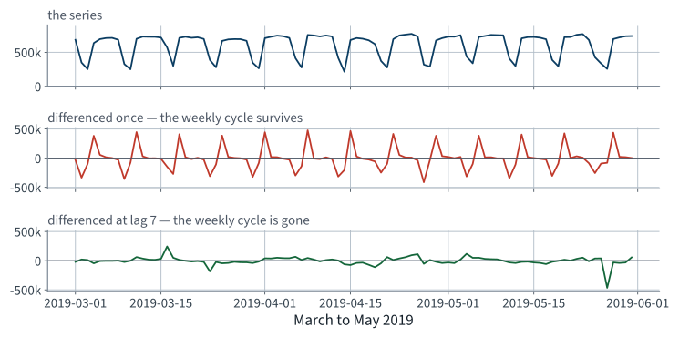
Differencing once leaves the weekly cycle intact. Differencing at lag seven removes it.
| Series | Standard deviation |
|---|---|
| the level | 183,841 |
| differenced once | 198,098 |
| differenced at lag 7 | 104,730 |
One difference increased the variability by 8%.
That is not a bug and it is not an accident. There is an exact condition, and it is the next slide.
For a weakly stationary series, define
The correlation of the series with itself, $k$ steps later. $\rho_0 = 1$ by construction, and the whole function $k \mapsto \rho_k$ is the autocorrelation function.
Note that it is defined only under stationarity: without it, the covariance depends on $t$ as well as on $k$ and there is no single number to plot.
Expand, using stationarity at each step:
So differencing at lag $k$ reduces the variance iff $2(1-\rho_k) < 1$:
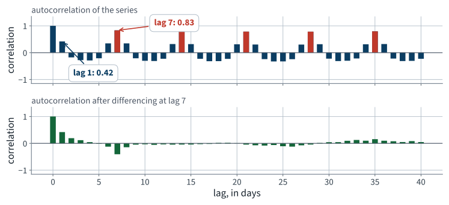
Every multiple of seven stands up. Lag 1 does not reach a half, and that is the whole explanation of the previous slide.
| Lag $k$ | $\rho_k$ | $\sqrt{2\sigma^2(1-\rho_k)}$ | Measured |
|---|---|---|---|
| 1 | 0.419 | 198,236 | 198,098 |
| 7 | 0.831 | 106,782 | 104,730 |
The lag-1 prediction is right to one part in a thousand; the lag-7 prediction to two per cent. The residual discrepancy is the series failing to be exactly stationary, which we already knew.
$\rho_1 = 0.419 < \tfrac12$, so the first difference must be worse. $\rho_7 = 0.831 > \tfrac12$, so the seventh must be better. Both were, before we knew why.
The forecast “copy the value from seven days ago” has error
Its error is the seasonal difference. So its error variance is $2\sigma^{2}(1-\rho_7)$, and with $\rho_7 = 0.831$ that is $0.34\,\sigma^{2}$.
A Gaussian of standard deviation 104,730 would have mean absolute value $\sqrt{2/\pi}\,\sigma \approx$ 83,562. Our measured MAE is 55,051.
Which is also the argument for MAE over RMSE, arriving from a second direction.
Examinable: state weak stationarity; prove the degree-drop; derive the variance identity and its consequence.
The method
40 minutes · examinable
Part two
15 minutes · ending with a number in writing
Given the last eight weeks of daily boardings up to and including today, predict the next day. One number out.
Eight weeks is a choice, not a law. We will justify it when we build the dataset.
RMSE punishes a large miss quadratically; MAE does not; MAPE is relative and therefore unit-free.
We report MAPE beside it, because a percentage is what a stakeholder will repeat back to you.
MAPE divides by the truth. On a day when ridership collapses, the denominator collapses too, and a modest absolute miss becomes an enormous percentage.
We use it as a second opinion, never as the objective.
Nobody in the room knows yet, and neither do we. So do what the second lecture told us to do: measure what costs nothing before committing to anything.
None of these is machine learning. All of them are systems a transit authority could deploy on the first day.
rail = df["rail"]["2016-01":"2019-05"]
target = rail[56:] # the days we will be scoring
for name, forecast in [("a constant", rail[:"2018-12"].mean()),
("copy the day before", rail.shift(1)[56:]),
("copy last week", rail.shift(7)[56:])]:
print(f"{name:16s} MAE {(target - forecast).abs().mean():>10,.0f}")
All three are scored on exactly the rows the models will be scored on, which is the only way the comparison means anything.
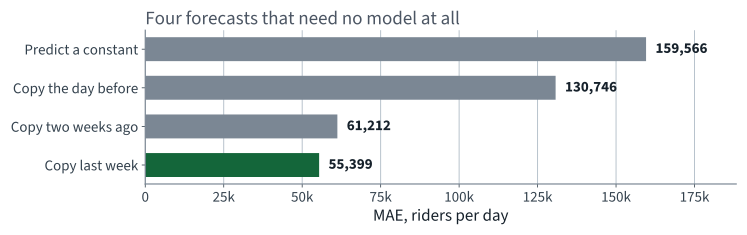
Copying last week is 2.4 times better than copying the previous day. The seven-day cycle is worth more than recency.
55,399
Mean absolute error of copy the value from seven days ago, over 1,191 days.
That is 12.0% of a typical day. On the three months the book plots it is better still: 42,143 for rail (9.0%) and 43,916 for bus (8.3%).
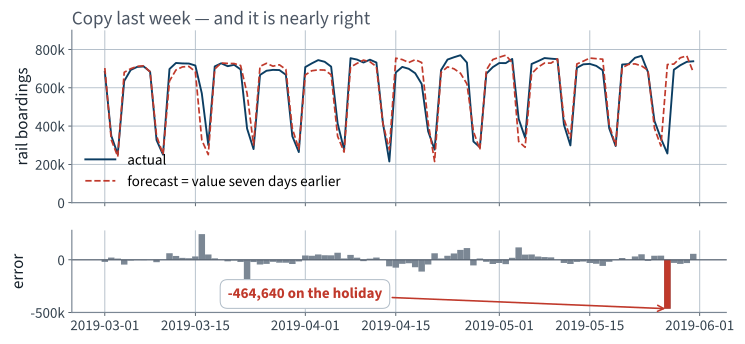
One holiday costs 464,640 in a single day — more than eight ordinary days of error put together.
Any model we build has to be better than this by enough to justify existing. “Better” is not enough; enough better is the bar.
Write down what you think enough is, before you see any model output. That is the next slide.
Step 1 is the only step that is new. Steps 3 to 5 are the same verbs as every application before this one.
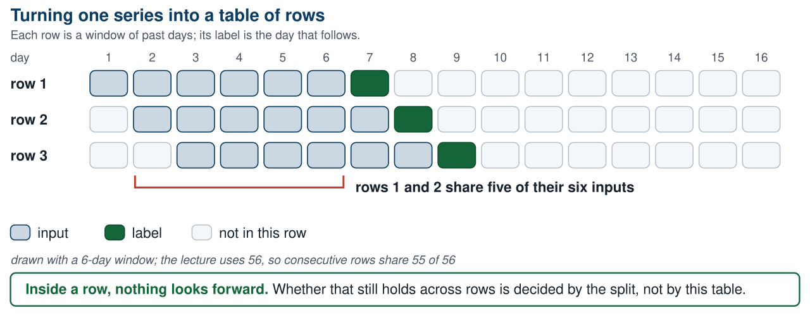
Every row is the row above it, shifted by one day. They overlap almost completely.
import torch
class TimeSeriesDataset(torch.utils.data.Dataset):
def __init__(self, series, window_length):
self.series, self.window_length = series, window_length
def __len__(self):
return len(self.series) - self.window_length
def __getitem__(self, idx):
end = idx + self.window_length # first index after the window
return self.series[idx:end], self.series[end]
Nine lines. The subtlety is entirely in
__len__ and in the single index end, which is both
the end of the window and the position of the label.
>>> toy = torch.tensor([[0], [1], [2], [3], [4], [5]])
>>> for window, target in TimeSeriesDataset(toy, window_length=3):
... print(window.flatten().tolist(), "->", target.item())
[0, 1, 2] -> 3
[1, 2, 3] -> 4
[2, 3, 4] -> 5
Three rows, three targets, none of them inside its own window. Step 4 of the working loop: test against a case whose answer is known.
This takes twenty seconds and it is the only thing standing between you and an off-by-one that produces a beautiful score.
window_length = 56
pool = df["rail"]["2016-01":"2019-05"] # 1,247 days
X, y = windows(pool.values / 1e6, window_length)
assert X.shape == (1191, 56, 1) # rows, time steps, series
assert y.shape == (1191, 1)
assert len(X) == len(pool) - window_length
The recurrent modules want three dimensions: batch, time, dimensionality. For one series the last is 1, and forgetting it produces an error message about matrix sizes that names neither time nor batch.
Boardings are hundreds of thousands. Dividing by
1e6 puts every value near the interval $[0,1]$, which is where
the default weight initialisation and the default learning rate expect to
find their inputs.
StandardScaler, which learns a mean.
The metric is reported back in passengers by multiplying the error by the same constant.
Longer windows cost rows: with a 365-day window this pool gives 882 rows instead of 1,191, and the model has more to learn from less.
It is a hyperparameter. Tune it — but tune it after you can measure it honestly, which is not yet.
$\rho_7 = 0.831$ says that any two days a week apart are strongly dependent.
Cross-validation assumes the held-out rows are independent of the rows the model was fitted on.
Those two sentences cannot both be acted on.
KFold(shuffle=True,
random_state=42), never the default.”
That rule was correct. It solved a real problem: a frame sorted differently gave different folds and nobody could see why.
Here it is the bug.
A rule you cannot say the reason for is a rule you will apply where it does not hold. This is the clearest example the course contains.
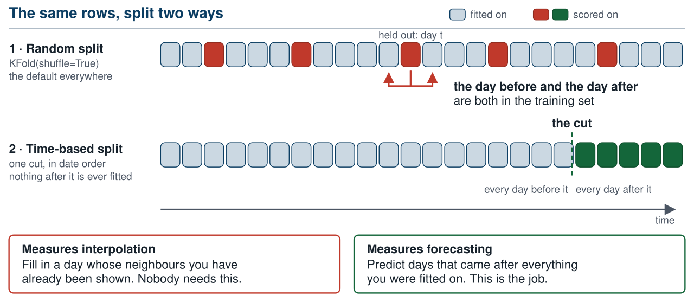
The upper protocol asks the model to fill a gap. The lower one asks it to forecast. Only one of those is the job.
Cross-validation estimates the risk
It is unbiased for $R$ under two conditions:
A shuffled split of a time series satisfies neither.
$\operatorname{Cov}(y_t, y_{t+k}) = \sigma^2\rho_k$, which is $0.83\,\sigma^2$ at $k=7$ and never near zero for $|k| \le 56$. The rows are dependent by construction.
Smaller conditional variance means smaller achievable loss, so the estimate is biased downwards. Positive autocorrelation fixes the direction of the bias: optimistic in the overwhelming majority of cases.
Not “always”. That would be a theorem, and we have not proved one — the argument above is a heuristic about conditional variance, not a bound. What we have is a measurement: on this series, 9–10% after matching training size, test size and the baseline.
In deployment, every training day precedes every day being forecast.
Under a shuffled split, four training days in five come after the day being scored.
from sklearn.model_selection import TimeSeriesSplit, cross_val_score
cv = TimeSeriesSplit(n_splits=5) # was KFold(shuffle=True)
folds = -cross_val_score(model, X, y, cv=cv,
scoring="neg_mean_absolute_error")
print(f"MAE {folds.mean():,.0f} folds {folds.round(0)}")
Same model, same rows, same seed, same metric. One argument is different.
| Splitter | Linear model, MAE |
|---|---|
KFold(shuffle=True) | 44,925 |
TimeSeriesSplit(5) | 51,880 |
Fit on everything up to the end of 2018; forecast the five months that follow, one day at a time, never seeing any of them.
| Model | Random split | Forecasting forward | Gap |
|---|---|---|---|
| Linear, 56 lags | 44,925 | 56,446 | +25.6% |
| Simple RNN, 32 units | 38,224 | 49,073 | +28.4% |
+10,848
Riders per day, on the number you wrote on paper.
We have a gap of 28%. How much of it is the split?
Three other things changed when we changed protocols, and each of them moves the number on its own:
Quote 28% without checking those and you have made the same mistake in the other direction.
Copying last week needs no fitting, so its error measures only how difficult a set of days is. Measure it on both sets of rows:
| Rows scored | Copy last week, MAE |
|---|---|
| the shuffled folds | 55,385 |
| the five months after the cut | 64,815 |
The forecast period is 17% harder before any model is involved — it contains the winter holidays. A good part of our 28% is that, not leakage.
This is the “we dropped the capped districts” slide from Lecture 2, returning: any time a number moves, ask first whether the evaluation set moved.
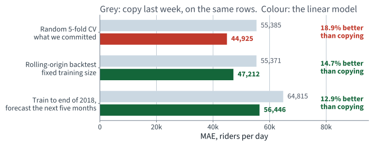
The margin over doing nothing falls from 18.9% to 12.9% as the protocol becomes honest. That comparison is immune to the test period.
TimeSeriesSplit's first fold fits on a fifth of
the rows. Its score, 80,506, is not a statement about the protocol; it is a
statement about having 238 rows.
TimeSeriesSplit(5) folds: 80506 38448 44838 37991 57615
^^^^^ 238 training rows
Repair: a rolling-origin backtest with a fixed training window — 700 rows for every origin, five origins, 98 days scored each time. Now the folds differ only in when they are.
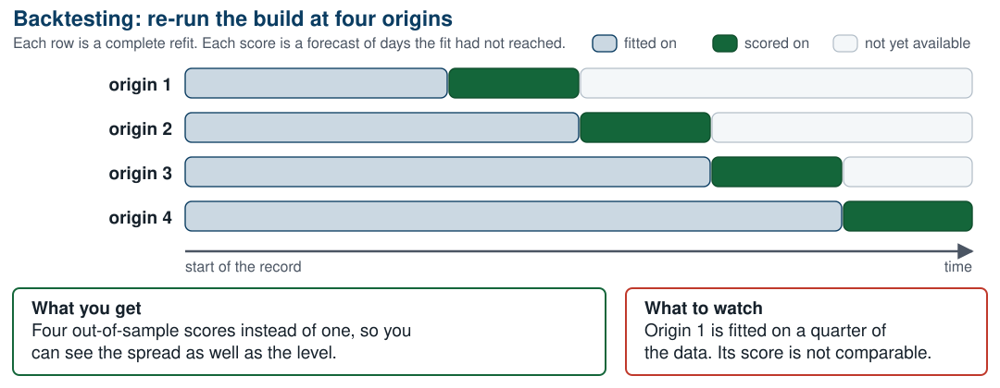
Four refits, four out-of-sample scores, and a spread you could not get from a single cut.
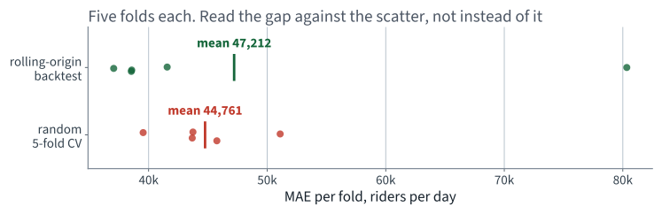
The random folds span 39,538 to 51,096; the backtest folds span more. A difference in means smaller than that spread is not a difference — the paired-comparison lesson from Lecture 2, unchanged.
Same training size (700 rows), same test size (98 rows), same model. Only the arrangement differs. Score each against copying last week on its own rows, which cancels the difficulty of the period:
| Protocol | Model | Naive | Ratio |
|---|---|---|---|
| random draws of 98 rows, 20 of them | 48,093 | 61,461 | 0.782 |
| rolling origin, 5 origins | 47,212 | 55,371 | 0.853 |
The random split reports the model as 9.0% more skilful than it is.
Both the recurrent network (9.7%) and the linear model (7.4%) are overstated by roughly the same amount, which is what you would expect if the cause is the split rather than the model.
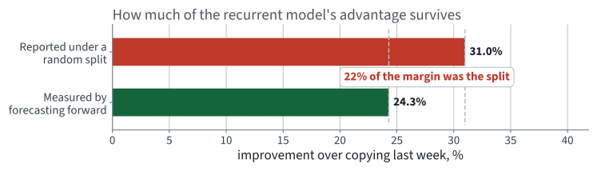
We told them the model was 31% better than doing nothing. It is 24% better. A fifth of the case for building it was an artefact of the evaluation.
| Scaling before the split | Random split on a series | |
|---|---|---|
| Diagnosed in | Lecture 2 | here |
| Cost, measured | about one dollar | a fifth of the model's value |
| Why that size | an invertible affine map, an equivariant estimator, 20,640 rows | $\rho_k$ large at every lag inside the window |
Same procedural rule, two orders of magnitude apart in consequence. You cannot tell which case you are in from the number — only from the structure. That is why the rule is procedural.
Model one
10 minutes
Fifty-six weights and a bias. If the model learns $w_6 = 1$ and every other weight zero, it has reinvented copy last week.
That is a useful thing to know before you start: the linear model contains the baseline. It cannot do worse unless we fit it badly.
from sklearn.linear_model import LinearRegression
from sklearn.model_selection import KFold, cross_val_score
Xflat = X.reshape(len(X), -1) # (1191, 56)
cv = KFold(n_splits=5, shuffle=True, random_state=42)
folds = -cross_val_score(LinearRegression(), Xflat, y.ravel(), cv=cv,
scoring="neg_mean_absolute_error")
print(f"MAE {1e6 * folds.mean():,.0f} per fold {1e6 * folds}")
Five folds, shuffled, fixed seed — the standing constraint from the second lecture, applied without modification.
44,925
Against 55,399 for copying last week.
18.9% better, and the five folds run from 39,538 to 51,096. Over twenty different shuffles the mean moves by about 300, so the improvement is far larger than the noise in the estimate.
It rediscovered the seven-day cycle from the data. Nobody told it that a week has seven days.
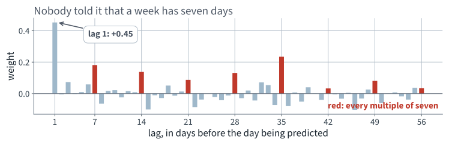
Every red bar is a multiple of seven, and every red bar is positive. That is the weekly cycle, learned rather than supplied.
Where a hyperparameter had to be chosen — the optimiser, in our case — it was chosen on the second half of 2018, which is inside the training period. The forecast period was touched once, at the end, per model.
Say what you selected on. Every time.
Even a clean cut leaks a little: the last training window overlaps the first scored day's history. The repair is to leave a gap — purging the overlapping rows and adding an embargo of a window length after the cut.
Purging and embargo are standard practice in financial backtesting and are outside the book; not examinable. The idea — that adjacency itself is a channel — is examinable, because we derived it.
| Model | What it says |
|---|---|
| AR(p) | today is a weighted sum of the last p days, plus noise |
| MA(q) | today is a weighted sum of the last q shocks |
| ARMA(p,q) | both |
| ARIMA(p,d,q) | both, after differencing d times — which is where today’s derivation enters |
| SARIMA | and seasonal differencing on top |
A linear model on lagged features, which is what we fitted, is an AR model — fitted by least squares rather than by the Yule–Walker equations, and with whatever extra features you care to add.
beyond the syllabus, for context The vocabulary is worth recognising; the estimation theory is not examinable here.
Not presented — for afterwards
five, in the style of the written paper
Solutions on Lecture 16’s deck.
KFold(shuffle=True) and reports a good score. Name the two conditions the split violates. [5]Solutions on Lecture 16’s deck.
The five set at the end of Lecture 14
not part of this lecture
1. Two boxes are disjoint and moved further apart. State what IoU and its derivative do, and why no learning…
Both are identically zero; a constant has no descent direction.
2. An IoU implementation without a clamp is tested on overlapping boxes only and passes. Give the input that…
Boxes separated on both axes. Assert the result lies in $[0,1]$ and is zero exactly when the boxes are disjoint.
3. Average precision is defined with a maximum inside it. State what that maximum repairs, and which earlier…
It replaces the non-monotone precision by its running maximum — the non-monotonicity proved in Lecture 3.
4. mAP is a mean over classes of a mean over IoU thresholds. Give one thing each averaging hides.
The class mean hides that a one-instance class weighs as much as a 350-instance one; the threshold mean hides the spread between loose and tight matching.
5. A team computes AP per image and averages those. State the direction of the error and its cause.
It is optimistic: single images contain few objects and often score 1.0.
Lecture 16 · Géron Ch. 13
Recurrent cells, unrolling, and backpropagation through time
Why it is unstable, and what LSTM and GRU gates do about it
Forecasting several steps ahead: recursive, direct and sequence-to-sequence
Run the Lecture 15 notebook first